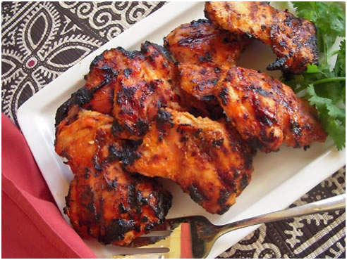

TANDOORI CHICKEN

Incredients
- 2 lbs (about 1 kg) chicken, cut into pieces
- 1 cup plain yogurt
- 3 tablespoons ginger-garlic paste
- 1 tablespoon red chili powder
- 1 tablespoon turmeric powder
- 1 tablespoon garam masala
- 1 tablespoon ground cumin
- 1 tablespoon ground coriander
- 1 tablespoon smoked paprika (for color, optional)
- 1 tablespoon vegetable oil
- Salt to taste
- Fresh coriander leaves and lemon wedges for garnish
Directions
- Step 1: Marinate the Chicken
- In a large bowl, combine yogurt, ginger-garlic paste, red chili powder, turmeric powder, garam masala, ground cumin, ground coriander, smoked paprika (if using), vegetable oil, and salt.
- Add the chicken pieces and coat them well with the marinade. Cover and refrigerate for at least 2 hours, or preferably overnight, to allow the flavors to penetrate the chicken.
- Step 2: Preheat the Oven or Grill
- If using an oven, preheat it to 425°F (220°C). If using a grill, preheat it to medium-high heat.
- Step 3: Skewer the Chicken (Optional)
- If desired, thread the marinated chicken pieces onto skewers for easier grilling or oven roasting.
- Step 4: Cook the Tandoori Chicken
- Place the chicken on a baking sheet (if using an oven) or directly on the grill grates.
- Cook for about 25-30 minutes or until the chicken is fully cooked and has a nice char on the edges. Turn the chicken pieces halfway through the cooking time for even cooking.
- Step 5: Garnish and Serve
- Garnish the Tandoori Chicken with fresh coriander leaves and serve with lemon wedges.
- Enjoy the flavorful Tandoori Chicken with naan, rice, or your favorite side dishes.